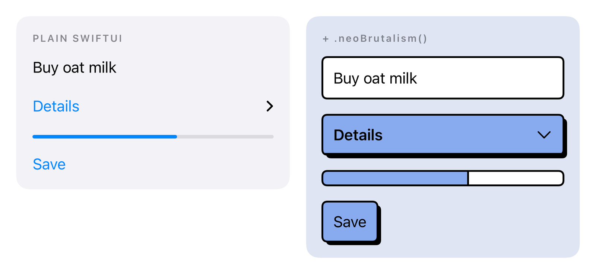

References / Software / 41
NeoBrutalism for SwiftUI
One SwiftUI modifier that restyles native iOS controls with thick borders and hard shadows.
- Source
- rational-kunal/NeoBrutalism on GitHub
- Creator
- Kunal Kamble
- Made
- 2025–present
- Style
- Neo-brutalism (agent-proposed, not yet reviewed by a person)
- Moods
- Direct, playful
- Evidence
- Downloaded and inspected the README image
docs/media/before-after-light.png(1980 × 912) and the theme swatch image. Licence read through the GitHub API. The package was not built or run. - Reviewed
- Rights
- Open license, stored. License: MIT. Rights policy
Context
The README states: “Add .neoBrutalism() at the root and every native control underneath picks up thick borders, hard shadows, and a matching palette.” It lists 30 components and six preset themes, for iOS 17 and later.
GitHub repository created 2 March 2025. MIT License, copyright 2025 Kunal (LICENSE).
Observed
- Left: plain SwiftUI controls with blue link-style text, a thin progress bar, and no borders. Right: the same controls with thick black outlines.
- The disclosure row and the Save button fill with flat periwinkle blue and cast a solid black shadow offset down and right.
- The progress bar becomes an outlined bar with a flat fill and a hard black divider at the fill edge.
- Label type becomes heavier on the transformed side. Corners stay slightly rounded.
Why it belongs
The before-and-after makes the style legible as a set of deltas: add outline, add hard shadow, fill flat, thicken type. It also shows the style moving from the web into native mobile UI.
Borrow
Describe the style as a transformation of default controls. A side-by-side of plain and styled states is a clear way to teach it.
Measured
Machine-extracted by tools/image-traits.py on . Full measurement.
- Mean chroma
- 0.06
- Palette
- #ffffff 37%
- #f2f2f7 28%
- #dfe5f2 21%
- #87aaed 7%
- #090a0b 2%
- #31363e 1%
- #9b9ea5 1%
- #7382a0 1%

